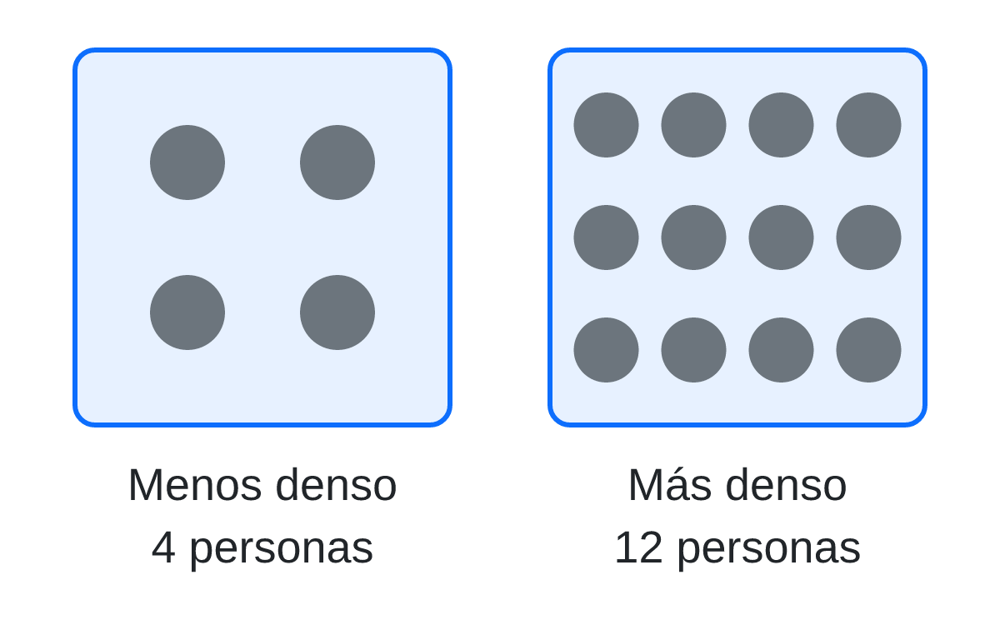

Un barco de acero de miles de toneladas flota y una moneda pequeña se hunde. La densidad explica por qué, y sirve para saber si algo flota sin tener que mojarlo.
Que algo flote no depende de lo que pesa. Un barco enorme flota y una moneda se hunde. Lo que cuenta es lo apretada que está la materia dentro del objeto, comparada con la del agua.
Piensa en dos autobuses iguales. A las ocho de la mañana uno va lleno; a mediodía, el otro va casi vacío. Son del mismo tamaño, pero en el primero hay mucha más gente en cada trozo del pasillo. El autobús es el volumen (el espacio que ocupa algo) y la gente es la masa (la cantidad de materia). La densidad dice cuánta masa cabe en cada trozo de volumen: lo lleno que va el autobús.

Un objeto flota si es menos denso que el agua: su autobús va más vacío que el del agua. El agua tiene una densidad de 1 gramo por centímetro cúbico (1 g/cm³). El acero del barco es mucho más denso, pero el barco está casi todo lleno de aire: contado entero, acero y aire juntos, su autobús va más vacío que el del agua, y flota.
Ya sabes medir la masa con una balanza (en gramos) y el volumen (en centímetros cúbicos). La densidad es la masa repartida entre el volumen:
\[ \text{densidad} = \frac{\text{masa}}{\text{volumen}} \]
Es como contar cuántas personas van en cada metro del autobús: repartes la gente entre el espacio.
Un cubo de madera mide 2 cm de lado y tiene una masa de 6 g. ¿Flota en el agua?
Un trozo de plastilina ocupa 10 cm³ y tiene una masa de 15 g. Calcula su densidad con los pasos del ejemplo y di si flota. Deberías obtener 1,5 g/cm³: es mayor que 1, así que se hunde. Comprueba que tu resultado lleva las unidades g/cm³. Así practicas decidir si algo flota sin tener que mojarlo.